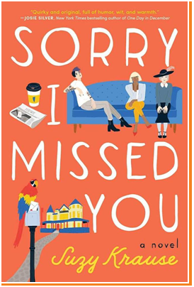
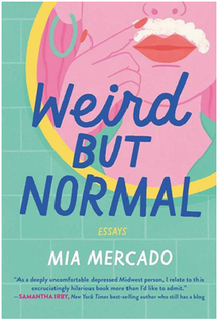
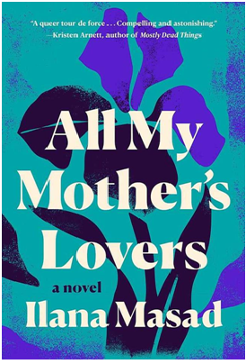

Buku ini akan menceritakan kisah 3 perempuan yang tinggal di sebuah rumah sewa. Namun menariknya, rumah tersebut memiliki hal-hal misterius seperti suara hantu dan hal menyeramkan lainnya. Masalah yang harus mereka hadaoi tak cukup sampai disitu! Ada pula kehadiran surat tanpa nama yang membuat mereka penasaran dengan apa yang sebenarnya terjadi.3. All My Mother’s Lovers Karangan Hana Masad

Beberapa orang mungkin sering merasa insecure dengn kekurangan yang Ia miliki. Nah, buku yang satu ini akan mengajarkan cara untuk menerima dan mencintai diri sendiri girls. Topik yang diangkat cenderung umum dan beragam. Gaya penulisannua juga cukup lucu menginspirasi dan pastinya menarik untuk dibaca.

Nggak kalah menarik, buku yang satu ini akan menceritakan kisah Maggie Krause yang menjadi perempuan pemurung setelah kematian ibunya. Ketika kembali ke rumah Ia pun menemukan 5 buah surat yang bertuliskan alamat dari lelaki yang tidak pernah diketahui Maggie dan keluarganya. Rasa penasarannya pun membuatnya bertualang untuk mencari misteri hubungan rahasia ibunya.